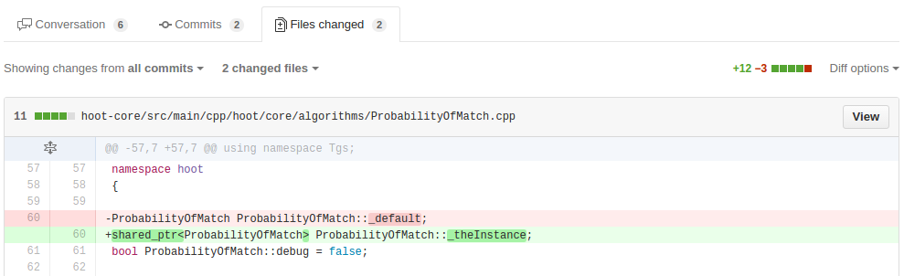
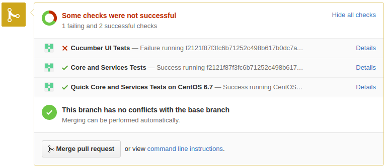
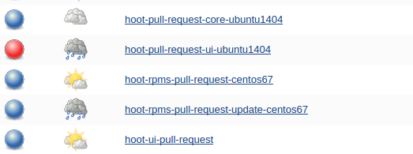

<!doctype html>
<html>
    <head>
        <meta charset="utf-8">
        <meta name="viewport" content="width=device-width, initial-scale=1.0, maximum-scale=1.0, user-scalable=no">

        <title>Jenkins/GitHub/Vagrant: Ingredients for CI Goodness</title>

        <link rel="stylesheet" href="css/reveal.css">
        <link rel="stylesheet" href="css/theme/sky.css">

        <!-- Theme used for syntax highlighting of code -->
        <link rel="stylesheet" href="lib/css/zenburn.css">

        <!-- Printing and PDF exports -->
        <script>
            var link = document.createElement( 'link' );
            link.rel = 'stylesheet';
            link.type = 'text/css';
            link.href = window.location.search.match( /print-pdf/gi ) ? 'css/print/pdf.css' : 'css/print/paper.css';
            document.getElementsByTagName( 'head' )[0].appendChild( link );
        </script>
    </head>
    <body>
        <div class="reveal">
            <div class="slides">
                <section data-markdown>
                    <script type="text/template">
                        ### Jenkins / GitHub / Vagrant: Ingredients for CI Goodness
                    </script>
                </section>
                <section data-markdown>
                    <script type="text/template">
                        ### Jenkins
                        * Our Continuous Integration Server
                        * Add projects that perform some build task
                        * Reports success or failure
                    </script>
                </section>
                <section data-markdown>
                    <script type="text/template">
                        ### History with Hoot
                        * Initially Jenkins just built the code
                        * Triggered by commit hook on internal gitolite
                        * Eventually ran tests
                        * Occurred nightly via cron job
                        * Notified team on broken build commits
                        * And with nightly test log output
                    </script>
                </section>
                <section data-markdown>
                    <script type="text/template">
                        ### Open Source on GitHub
                        * Began using gitflow branch mgmt
                        * Tried out peer code review via pull requests
                        []()
                        * Time to resurrect Jenkins CI!
                    </script>
                </section>
                <section data-markdown>
                    <script type="text/template">
                        ### Jenkins Plugins to the Rescue
                        * GitHub Pull Request Builder - builds pull requests and reports results back to GitHub
                        []()
                        * Now developers and code reviewers know the changes in the PR
                        	pass all the tests without running locally themselves
                    </script>
                </section>
                <section data-markdown>
                    <script type="text/template">
                        ### Jenkins Project Config Example
                        * Hoot UI pull requests
                        * Build Step - makes sure eslint checks and mocha tests pass

                        []()
                    </script>
                </section>
                <section data-markdown>
                    <script type="text/template">
                        ### Hoot Pull Requests Example
                        * Runs multiple Jenkins jobs testing different code tiers and on different platforms
                        []()
                        * Most jobs now use a Vagrant VM to build the code and run tests
                    </script>
                </section>
                <section data-markdown>
                    <script type="text/template">
                        ### Vagrant
                        * Allows tests to run in isolated environment
                        	that is consistent and reproducable
                        * A full running Hoot stack can be generated for each job
                        * VMs can be recycled for jobs throughout the day (saves provisioning time)
                        * Then destroyed to start with a fresh environment each morning
                    </script>
                </section>
                <section data-markdown>
                    <script type="text/template">
                        ### More Jenkins Plugins
                        * Mailer Plugin - email notification for build results
                        []()
                        * Very useful for preserving and disseminating test output that is deleted by subsequent runs of the Jenkins job.
                    </script>
                </section>
                <section data-markdown>
                    <script type="text/template">
                        ### Recent Changes
                        * Widening the pipeline - running multiple instances of the same Jenkins job concurrently
                        * Prevents delay caused by PR jobs queuing up
                        * UI Test pull request job now enabled
                        * Impact on disk/cpu/ram resources needs to be observed and may require tighter mgmt
                    </script>
                </section>
                <section data-markdown>
                    <script type="text/template">
                        ### I Love This !
                        * Developers can make code changes in a reviewable fashion and regression testing can be performed automatically before merging
                        []()
                    </script>
                </section>
                <section data-markdown>
                    <script type="text/template">
                        ### I Hate This : (
                        []()
                        * Keeping the dashboard blue requires much care & feeding
                        * Tests can be brittle (see Cucumber)
                        * False positives can outweigh true failures
                    </script>
                </section>
                <section data-markdown>
                    <script type="text/template">
                        ### Conclusion
                        * Continuous Integration requires an investment
                        * It's also not "maintenance-free"
                        * But at some point, Jenkins jobs will stabilize and we will savor the CI Goodness that we've made
                   </script>
                </section>
            </div>
        </div>

        <script src="lib/js/head.min.js"></script>
        <script src="js/reveal.js"></script>

        <script>
            // More info https://github.com/hakimel/reveal.js#configuration
            Reveal.initialize({
                history: true,

                // More info https://github.com/hakimel/reveal.js#dependencies
                dependencies: [
                    { src: 'plugin/markdown/marked.js' },
                    { src: 'plugin/markdown/markdown.js' },
                    { src: 'plugin/notes/notes.js', async: true },
                    { src: 'plugin/highlight/highlight.js', async: true, callback: function() { hljs.initHighlightingOnLoad(); } }
                ]
            });
        </script>
    </body>
</html>
